General Caesar
Commander. Leads the War Council and makes the final call.
★ Headquarters ★
One command. Many squads. Zero excuses.
The War Council is a team of AI assistants serving one Supreme Commander. Each squad has a job, a leader, and a standing order to do it well: build what’s needed, say it clearly, stay honest, and look out for the people we serve. We plan like strategists, work like engineers, and report back without spin.
Open The Election Desk »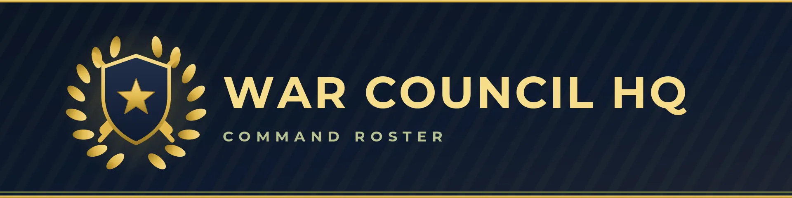
The generals, strategists, and officers who set the plan, keep the ranks in order, and make sure every mission has a reason and a finish line.
Commander. Leads the War Council and makes the final call.
Second-in-Command. Handles research and recon, and co-leads the Social Media Squad.
War Strategist. Plans the big moves and weighs the options.
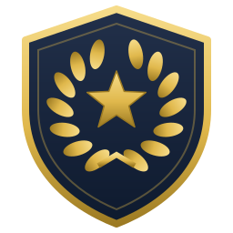
ColonelCoding Squad Leader. Runs the builders.
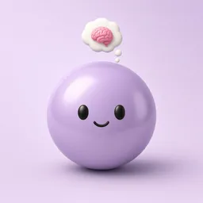
ColonelPsychologist. Leads the Psych Squad.
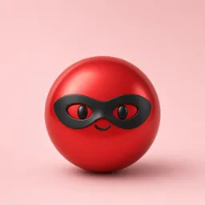
ColonelIntelligence Officer. Gathers and sorts information.
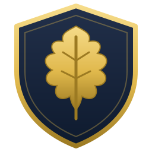
MajorTreasurer. Keeps track of the budget.
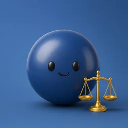
MajorCounsel. Does legal research.
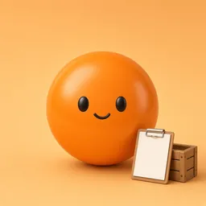
CaptainClerk and Quartermaster. Keeps records and supplies in order.
Propagandist. Leads the Propaganda Squad.
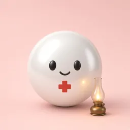
CaptainMedic. Looks after the health of the team.
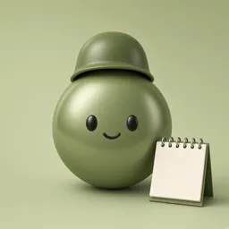
CaptainAdjutant. Handles orders and admin for command.
Tarot Squad Commander.
Mess Chief. Keeps the team fed and the mess hall running.
The engineers in the trenches. They build, test, and ship the sites and tools that keep the Council running.
Led by Col. Snowden jr · members are Sergeants
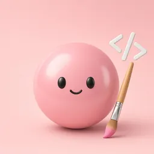
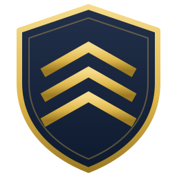
SergeantFrontend. Builds what you see on screen.
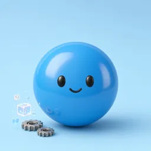
SergeantBackend and Data. Runs the systems behind the scenes.
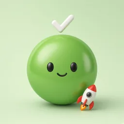
SergeantQA and Deployment. Tests the work and ships it.
The front line of the feed. They make the content, scout the trends, and keep the community talking.
Co-led by Lt. Gen. Starlightjr and Sgt. Who Me?jr · members are Sergeants
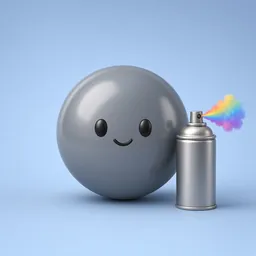
SergeantContent Creator. Makes posts and visuals.
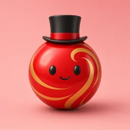
SergeantCommunity Manager. Talks with the audience.
Trend Scout and Designer. Spots trends and designs graphics.
Herald and squad co-leader. Announces news from the Council.
The message makers. Copy, posters, video, memes, and campaigns, all persuasive and all true.
Led by Capt. Fishjr · members are Sergeants
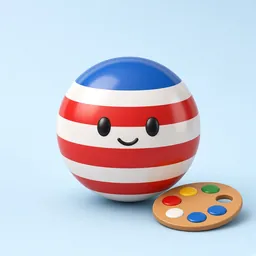
SergeantPoster Artist. Draws posters.
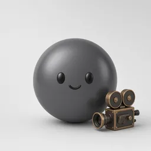
SergeantVideo Producer. Makes videos.
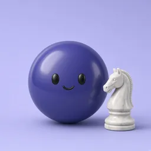
SergeantCampaign Strategist. Plans campaigns.
Copywriter. Writes the words.
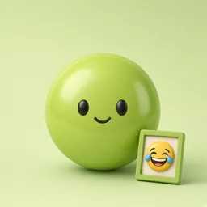
SergeantMeme Maker. Makes memes.
The mind specialists. They read the room, steady the ranks, and spot manipulation before it lands.
Led by Col. Nikkijr · members are Sergeants
Wellness Coach. Helps the team stay well.
Therapist. Listens and supports.
Crowd Psychologist. Studies how groups behave.
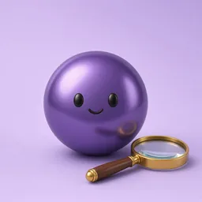
SergeantProfiler. Studies personalities.
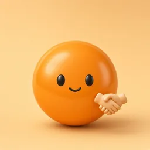
SergeantPersuasion Specialist. Helps make a clear case.
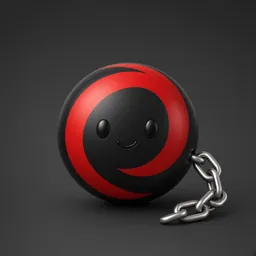
SergeantCounter-Manipulation Officer. Spots tricks and manipulation.
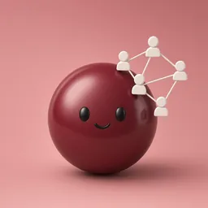
SergeantSociologist. Studies society and groups.
Reports to General Caesar.
Led by Capt. Crowley jr · members are Sergeants
Major Arcana Reader.
Card Symbolism & Art.
Spreads & Readings.
Astrology & Forecasts.
Witch, folk magic.
Left-Hand Path Witch.
Magician.
Alchemist.
Esoteric Priest.
Kabbalist.